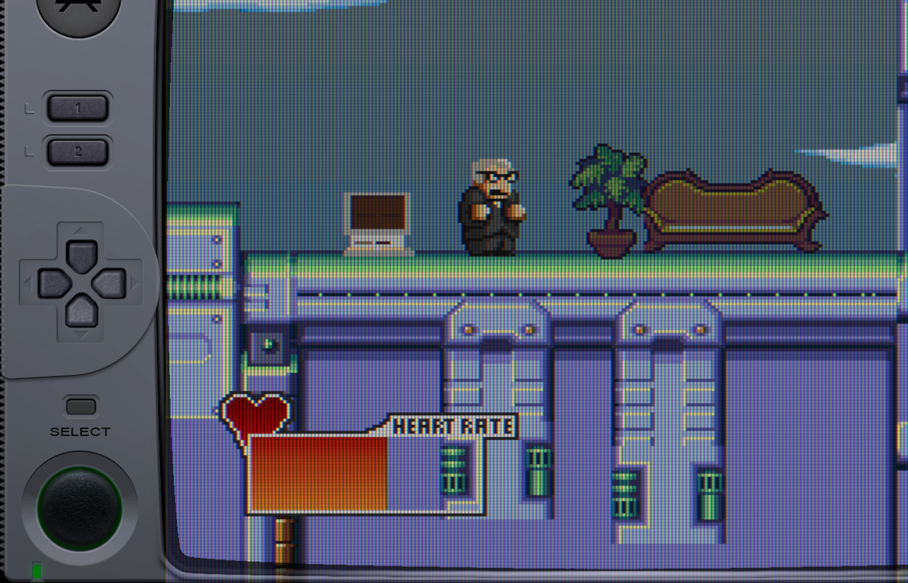
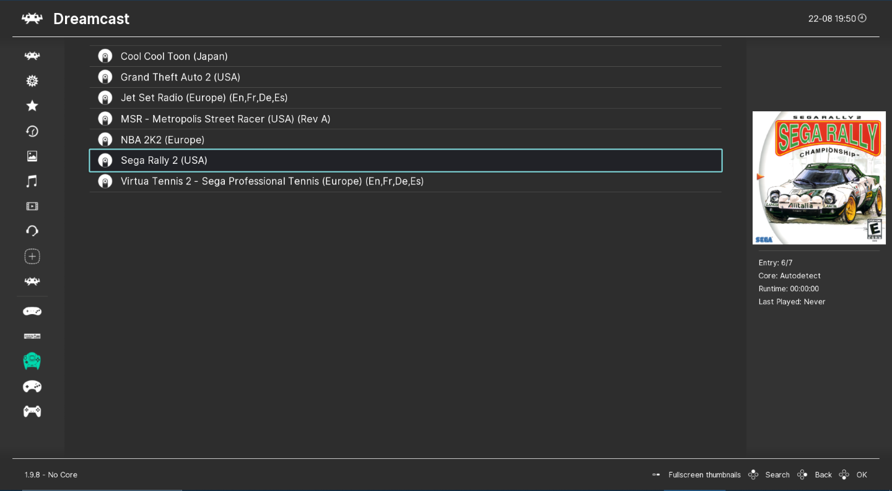

RetroArch 用了三年才发现的四个狠活——着色器叠 16 层、观战大厅、按游戏存配置……
大家用 RetroArch 一般就是选核心加载 ROM 玩游戏吧？其实它藏着一堆官方不怎么宣传的进阶功能，从着色器的多层叠加到 Netplay 的观战模式，每一个都能彻底改变你的复古游戏体验。
你以为 RetroArch 只是个能跑一堆老游戏的模拟器壳子？选个核心、加载 ROM、调调视频比例就完事了。说实话我之前也是这么想的——直到翻完了它所有子菜单，发现它藏着好几个官方文档都没大张旗鼓讲的狠活。这些功能不是"锦上添花"，而是能彻底改变你日常使用方式的那种。今天把我挖出来的四个最实用的分享给你，藏得真深。
一、着色器不仅能选，还能按游戏自动切
RetroArch 的着色器（Shaders）是它最出名的功能之一，官网上专门有一栏介绍它的各种图像滤镜能力——能把现代显示器上的像素游戏还原出老式 CRT 电视的扫描线质感。但 90% 的人只是加载一个预设就完事了，不知道它还有两个藏得挺深的能力。
第一个是叠加。RetroArch 支持最多 16 层 Shader Pass 叠加——也就是说你可以先上一层锐化、再叠一层 CRT 扫描线、最后加个色彩校正，三层组合出独一无二的画面。这个功能藏在 Settings → Video → Shaders 里，加载预设之后，你会发现还有个"Passes"参数能调。可惜大部分人永远停在第一层。
第二个是 Override 保存。PS1 游戏你想用 CRT 扫描线，GBA 想用锐化加游戏机边框，FC 又想要最朴素的原始画面——难道每次切换游戏都要重新加载 Shader？完全不需要。在 Quick Menu → Shaders 里加载好当前游戏的 Shader 组合，然后找 Overrides 子菜单，里面有 Save Core Override 和 Save Game Override 两个选项。保存之后，以后只要一加载同核心或者同一款游戏，对应的着色器自动就上来了，根本不用手动调。

我自己的用法是：PS1 Core 默认 DuckStation + CRT 扫描线预设，GBA Core 默认 mGBA + 锐化，再给几个画面特别好看的 PS1 大作单独存了 Game Override。切换游戏的时候完全无感，画面自动适配。这个功能藏得真的很——它不在主菜单，不在 Settings，在 Quick Menu 的 Shaders 子菜单里，而且 Overrides 按钮在加载完预设之后才会出现，很多人直接加载完就退出来了，根本没看到。
二、Netplay 不止能对战，还能当观众
RetroArch 的联机对战叫 Netplay，基于 GGPO 式回滚网络代码，双方各自回退重放到同步点，延迟极低。但你知道吗，它还支持观战。
打开 Main Menu → Netplay Rooms，大厅里除了能加入别人开的房间对战，还可以直接选一个房间观战——进去之后你看到的就是主机那边的实时画面，操控权在主机手里，你只能看。适合什么场景？新手想看看高手怎么玩《合金弹头》的速通、朋友开了个房间你暂时不想打但想围观、或者单纯想找个人气高的房间蹭一局体验。
开房间的人如果想让别人观战也不用额外设置——只要进 Netplay Rooms → Start Netplay Host 创建房间，公告到大厅后，其他玩家就能搜到你的房间，选择加入对战或者观战。最多支持 16 人联机 + 观战，这个规模在模拟器联机里算挺夸张的了。
有个小坑要注意：联机的双方必须用完全相同的 ROM（CRC32 校验值一致）和相同版本的 Core，否则加进去直接不同步。我之前帮朋友调联机，就是因为他用了不同版本的 FCEUmm Core，加进来之后画面各自走各自的，根本同步不了。换成同一个 Online Updater 更新的 Core 之后立刻就好了。
三、视频比例、按键映射、着色器——所有设置都能按游戏存
刚才讲了 Shader Override 可以按游戏存，但你可能不知道，Quick Menu 里的 Overrides 子菜单覆盖的远不止着色器这一项。
Settings 里你调的任何东西——视频比例（16:9 vs 原始 4:3 vs 自定义拉伸）、按键重映射（手柄按键对应模拟器的哪个按钮）、音频延迟、甚至 Netplay 的参数——全都能按 Core 或者按单个游戏保存。而且保存之后，切回其他游戏就自动恢复全局默认值，完全不影响。
举个例子，FC 的《魂斗罗》我用标准 4:3 比例玩，但《马里奥赛车》我喜欢拉伸到 16:9 全屏；GBA 模拟器默认按键映射是 A=B、B=A，但某几款 RPG 游戏我习惯反过来按——这些全都可以分别存成 Game Override，玩哪个游戏自动切哪个配置。
怎么用？在任何已经加载了游戏的状态下，按手柄的 Menu 键或者键盘 F1 呼出 Quick Menu，往下翻找到 Overrides 一项，里面列了所有可以保存的维度：Save Game Override（单游戏）、Save Core Override（整核心）、Save Directory Override（同目录下所有游戏）。选一个保存就行，下次加载自动生效。
这个子菜单藏在 Quick Menu 的下半部分，第一次找费了我好大劲。而且它必须在游戏已经运行的时候才能看到——主菜单里没有 Overrides 这个选项，很多人以为 RetroArch 不支持按游戏保存设置，其实它支持得很彻底。
四、安卓上的屏幕键盘可以切系统键盘，还能打中文
移动端的 RetroArch 先从下载拿到安装包装好之后，有个绕不开的痛点：需要输入文字的时候怎么办？搜游戏、填 RetroAchievements 账号密码、Netplay 房间密码，全都得打字。RetroArch 内置了屏幕键盘（On-Screen Keyboard），但很多人不知道它可以切换成调用系统键盘。
默认情况下 RetroArch 用自己的屏幕键盘——虽然支持 QWERTY 和中日韩布局，但毕竟是模拟器自己画的键盘，体验跟系统的差远了。特别是中文输入，内置键盘根本没法打拼音。解决办法我是翻RetroArch文档的时候偶然发现的——藏在 Settings → User Interface → On-Screen Keyboard 里，找 Use System Keyboard 这个开关，打开之后，下次需要打字的时候直接调起安卓/iOS 自带的输入法。

不过有个小插曲我得提一下：打开系统键盘之后，有些设备上键盘会被 RetroArch 的覆盖层遮住——也就是键盘弹出来了，但 RetroArch 的菜单还盖在上面，你看不到键盘的按键。这个问题不是所有设备都有，我的小米 11 上正常，但用了鸿蒙系统的荣耀手机就会被遮住。解决办法很简单：先退到 RetroArch 主菜单再打字，或者临时切回内置键盘用。
另外一个小提示：RetroAchievements 的密码别搞太复杂，内置屏幕键盘上切换特殊字符特别麻烦。如果密码里有 @ 或者 # 这种符号，每输一个就得切一次数字符号布局，手都酸了。要么开系统键盘，要么提前把密码里的特殊字符简化一下。
最后
RetroArch 有个特点：它的功能不是按"新手→进阶"分层组织的，而是按功能模块平铺在各个子菜单里——很多进阶功能和基础功能混在一起，藏得特别深。上面这四个是我用了三年之后才挖到的最有用的四个，每一个都让我的日常使用变方便了好多。
如果你也在用 RetroArch，建议从 Overrides 子菜单开始挖——这东西真的能让你省下大量重复调设置的时间。毕竟能自动适配每个游戏的画面、按键、着色器，这不就是模拟器应该有的样子吗。这套 RetroArch 的整理资料在三个仓库都能拿到：GitHub 主仓库、Gitee 和 GitCode 国内镜像，哪个能用就用哪个。